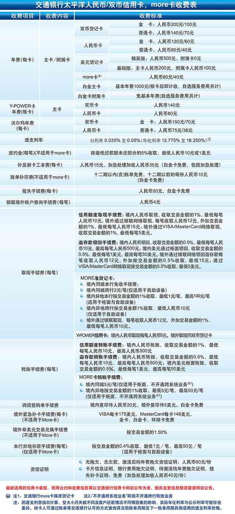

交通银行银联IC信用卡闪付业务条款
一、银联IC信用卡闪付业务（下称“闪付业务”）是交通银行向银联IC信用卡持卡人（下称“持卡人”）提供的一种以接触或非接触方式进行快速、小额消费的支付业务。持卡人办理闪付业务，须遵守本业务条款。
二、本闪付业务仅适用于交通银行银联IC信用卡（下称“IC卡”），IC卡项下同时开立电子现金账户和主账户，具体包括：
（一）闪付免密免签业务。该业务为IC卡项下信用卡主账户（下称“主账户”）所具备的功能。
（二）闪付电子现金业务。该业务为IC卡项下电子现金账户所具备的功能，电子现金账户与主账户（仅限人民币账户）之间自动建立关联关系。
三、闪付免密免签业务
（一）闪付免密免签业务（下称“免密免签业务”）是指在部分指定行业和特约商户内，针对持卡人使用IC卡或承载IC卡信息的移动设备卡以闪付方式发起的、一定单笔交易限额以下的联机交易。 免密免签业务的单笔交易限额及累计交易限额以中国银联对外公布的限额为准，交通银行如根据自身风险政策要求调整单笔交易限额及累计交易限额，将通过信用卡网站或其他相关渠道公布。
移动设备卡是指加载于具备NFC近场通讯功能的移动设备内，借助移动设备相关功能完成资金支付功能的金融应用。移动设备卡属于异形IC卡。
（二）持卡人可通过客户服务热线或交通银行公布的其他渠道取消免密免签业务。
（三）免密免签业务无需进行密码验证和签名确认。持卡人可使用主账户的免密免签业务功能在支持中国银联IC卡受理的特约商户以IC卡非接触方式进行联机消费，通过上述联机消费方式发生的交易均视作持卡人本人所为。
（四）免密免签业务功能仅可在主账户卡卡面载明的有效期内进行。
（五）当主账户被挂失、冻结、注销或者发生其他不正常状态时，免密免签业务功能也随之止付。持卡人在有效期内须妥善保管IC卡。若持卡人否认在IC卡正式挂失前发生的免密免签交易，可致电交通银行信用卡中心提起申诉赔付，交通银行信用卡中心将根据中国银联相关规定对符合赔付规定的免密免签交易进行赔付；除此种情况以外，因IC卡遗失、被盗、出借、被第三方滥用等造成主账户内资金损失的，或申请赔付的免密免签交易不符合中国银联相关赔付规定的，或持卡人无法按照中国银联规定提供相关材料的，以及对于超过中国银联赔付规定金额等情形的，由持卡人自行承担相应损失。
（六）免密免签业务的交易提供对账服务，持卡人可通过现有的各账单服务查询主账户账务变动情况、额度信息和交易明细。
（七）持卡人使用免密免签业务进行的交易将作为消费类交易记入主账户，并可享受免息还款期待遇；如未按时偿还主账户透支欠款的，持卡人应按照适用的交通银行信用卡章程和领用合约承担透支利息和手续费。
四、闪付电子现金业务
（一）持卡人不得取消IC卡的电子现金账户，或者取消、变更电子现金账户与主账户之间的关联关系（纯功能卡销卡的情形除外）。同一主账户所关联的多个电子现金账户或者主卡及其附属卡分别关联的电子现金账户（如有）各自独立，互无关联。
（二）持卡人办理本业务条款规定的圈存、脱机消费、圈提等电子现金业务，将记入其IC卡的电子现金账户，且以人民币记账。如实际交易币种为外币，货币转换由中国银联按照其相关规定执行。
（三）电子现金账户初始余额为零，不可透支，持卡人须在其中存入足够资金（下称“圈存”）后方可使用。电子现金账户内的资金不计付存款利息，且资金余额在任何时候不得超过监管限额（现为人民币1000元）；交通银行有权根据监管规定不时调整该限额，亦有权在监管限额之下对特定IC卡或持卡人的电子现金账户另行设定资金限额。
（四）持卡人办理圈存，应通过交通银行境内营业网点、自助机具或者其他受认可渠道，从主账户向电子现金账户转账存入资金（下称“指定账户圈存”）或者直接向电子现金账户进行现金充值，并承担相关手续费（如有）。 指定账户圈存须校验主账户的交易密码，并作为消费类交易记入主账户；持卡人使用主账户透支进行的指定账户圈存交易可享受免息还款期待遇；如未按时偿还主账户透支欠款的，持卡人应按照适用的交通银行信用卡章程和领用合约承担透支利息和手续费。
（五）持卡人仅可使用电子现金账户在支持中国银联IC卡受理的特约商户以芯片接触或非接触方式进行脱机消费（下称“脱机消费”）；除另有规定外，电子现金账户不得进行包括取现或转账在内的其他支付结算交易（包括但不限于不得将已圈存到电子现金账户的资金转回主账户）。 脱机消费无需进行密码验证、身份验证和签名确认，均视作持卡人本人所为。
（六）持卡人在脱机消费时如遇电子现金账户余额不足的，对于IC卡且受理机具支持实时转接主账户联机交易的，该交易将直接全额改用主账户联机进行交易并适用主账户的联机交易规则；对于受理机具不支持实时转接主账户联机交易的，该交易失败。
（七）脱机消费仅可在电子现金账户的有效期内进行。电子现金账户的有效期以IC卡卡面或者其所关联的主账户卡卡面载明的有效期为准。但是，如纯功能卡所关联的主账户卡发生挂失补卡、卡片重置等情形的，除非纯功能卡亦换发新卡，否则电子现金账户的有效期仍以原主账户卡的有效期为准。
（八）电子现金账户不得挂失止付，其所关联的主账户挂失亦不对电子现金账户生效。持卡人在有效期内须妥善保管IC卡。除非向交通银行交还IC卡，主账户被挂失、冻结、注销或者发生其他不正常状态时，电子现金账户仍可在有效期内脱机消费。因IC卡遗失、被盗、出借、被第三方滥用等造成电子现金账户内的资金损失由持卡人自行承担。
（九）电子现金账户的交易不提供对账单服务。 持卡人如需了解其电子现金账户的账务变动情况、余额信息和交易明细，须通过交通银行境内营业网点、自动机具或者其他受认可渠道交验IC卡进行查询。
（十）IC卡发生挂失补卡、重置卡、到期续卡或者纯功能卡发生补卡、重置卡等情形的，原电子现金账户余额不自动转入新卡，但新卡的电子现金账户与主账户将自动建立关联关系。
（十一）IC卡发生卡片到期、提前注销、卡片毁损等情形，且届时电子现金账户仍有余额的，持卡人可到交通银行境内营业网点交还IC卡，申请将电子现金账户余额取回（下称“圈提”）；持卡人无法向交通银行交还IC卡的，须在有效期届满之日起的30日后持本人有效身份证件到交通银行境内营业网点办理圈提。
（十二）圈提仅可将资金转入主账户，或者在主账户状态正常且无透支的情况下提取现金。持卡人如未在有效期届满之日起的210天内办理圈提的，电子现金账户余额不予退还。
五、持卡人在交通银行境内营业网点或自助机具，以及支持中国银联IC卡受理的特约商户等渠道办理闪付业务，除本业务条款外，还应遵守适用的交通银行信用卡章程、领用合约，以及交通银行、收单银行，以及中国银联的相关规定。本业务条款与适用的交通银行信用卡章程、领用合约有任何不一致的，以本业务条款的规定为准。
六、持卡人在办理闪付业务时如有下列情形之一的，违反本业务条款或其他相关规定的，交通银行有权对其采取停止办理闪付业务、冻结主账户、取消IC卡用卡资格等管制措施，而无须事先通知：
（一）持卡人在闪付业务交易过程中存在虚假交易（包括但不限于实施无实质经济内容的虚假交易）、舞弊、欺诈或其他不诚信行为；
（二）IC卡存在出租、转借、交由他人使用的情形；
（三）持卡人将IC卡用于生产经营、投资等非个人消费领域；
（四）持卡人拒不配合银行就相关交易、案件或争议进行调查的；
（五）持卡人存在恶意申请赔付的情形；
（六）有其他违反适用法律规定或严重违反本业务条款及领用合约约定或用卡风险可能增加的情形。
七、交通银行有权在法律法规允许的范围内修改本业务条款（包括但不限于提前终止本业务、调整业务规则等），并于交通银行信用卡网站或其他相关渠道公告后生效。持卡人如对本业务条款有任何疑问，可要求交通银行予以释明。
